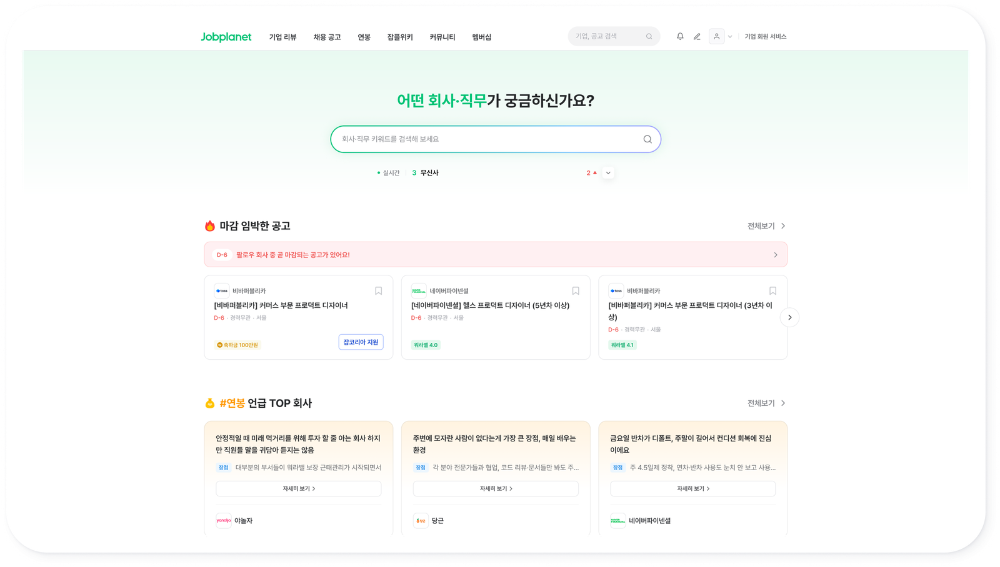
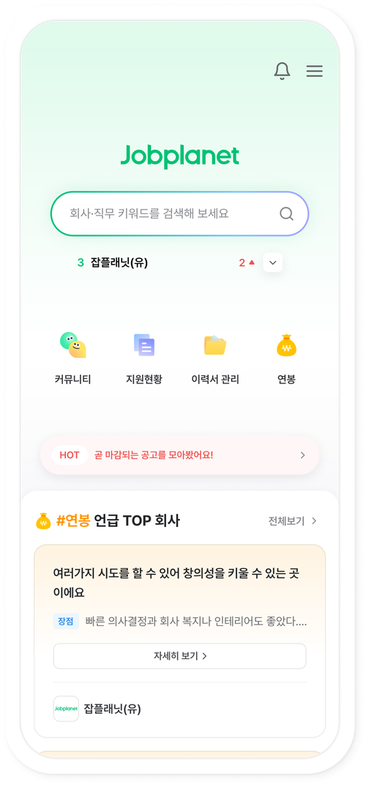
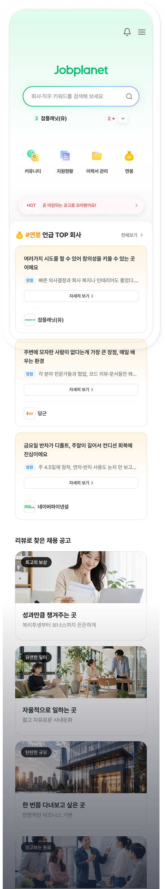

두 스쿼드(Review&Core + Hiring&Member) 리드 PD로, 잡플래닛 홈 구조를 검색 중심 + 모듈화 방식으로 개편. 통합 UT를 직접 설계·리딩해 4개 영역을 동시 검증하고 데이터 기반으로 개편 방향을 이끌었습니다.
리드 PD · 두 스쿼드 크로스
홈 · GNB · 공고탐색
외부 9명 + 내부 3명 · 인당 70분


GNB 클릭 중 기업리뷰 조회가 ~64%로 고착돼 있고, 홈 탭 클릭은 0.401%에 그칩니다. 잡플래닛 퍼소나는 탐색, 비교, 공고, 지원 순으로 이동해야 하지만, 홈이 이 흐름의 출발점 역할을 하지 못해 공고 조회와 지원으로 이어지는 흐름 자체가 구조적으로 막혀 있었습니다.
GNB 클릭 비중 기준
만약:
그러면:
홈에서 탐색을 시작하는 비율이 높아지고 검색 이탈이 줄 것
만약:
그러면:
홈에서 탐색을 이어가는 행동이 발생할 것
GNB = 목적지 단축키로만 작동, 탐색 흐름의 일부가 아니었습니다.
12명: 외부 9 + 내부 리허설 3
인당 약 70분 · Clarity 화면 녹화 연동
긴급 7 · 비긴급 2
신입 3 · 미들 4 · 시니어 2
홈 탭 구조 + 섹션 배치: 담당
GNB 탭 이동 구조: 담당
공고 카드: 담당 (부록 참조)
리뷰 피드화: 협업 PD
지원 플로우 · 면접 질문 탐색: 협업 PD
부분검증 직군 기반 추천으로 탐색을 시작하는가: 범용 개인화 실패. 팔로우 기업 업데이트만 유효
부분검증 재방문 맥락 이어가기: '최근 본 기업' 수요 없음
미검증 GNB 탐색 흐름 역할: 목적지 단축키로만 작동
홈 = 콘텐츠 나열 공간
홈 = 검색 + 맥락 허브. 검색바가 메인 진입점, 그 아래는 사용자 상태에 따라 달라지는 모듈로 구성했습니다.
검색바(고정): 홈 상단 1순위. 탐색 시작점 명시.
팔로우 기업 마감 임박(모듈 A): 팔로우 기업 있을 때 노출. 재방문 트리거. PC는 캐러셀형, 모바일은 스크롤 깊이를 고려해 배너형으로 축약.
전/현직장 리뷰 피드(모듈 B): 리뷰 소비를 늘리기 위한 모듈.
리뷰 워딩 테마 공고(모듈 C): "칼퇴 가능", "예산 넉넉" 등 리뷰 기반 큐레이션.
레이더 차트 개인화: 4/7 의미 이해 실패로 인지 부하만 증가
최근 본 기업 사이드 위젯: 탐색 동선 끊김 + 수요 낮음
범용 직군 기반 추천: '내가 모르는 기업' 방향은 작동 안 함
배포된 홈 화면을 위에서 아래 순서대로 뜯어보면, 각 모듈은 리뷰 조회와 공고 조회를 높이기 위한 핵심 기능 위주로 구성돼 있습니다. 관리자가 노출 여부와 순서를 직접 제어할 수 있도록 모듈 형태로 개발했습니다.

유저 대부분이 홈 콘텐츠는 안 보고 검색부터 했기에, 검색바를 최상단 고정 요소로 설계했어요. 시도율 76.0%.
여러 화면에 흩어져 있던 메뉴를 검색바 바로 아래 퀵메뉴 한 줄로 모아 접근성을 높였어요.
UT에서 유일하게 자발적 재방문을 이끈 신호라 이 모듈만 남기고, 다른 개인화 시도는 걷어냈어요.
홈의 역할을 '발견'이 아닌 '추적'으로 재정의하며 리뷰를 콘텐츠 중심에 뒀어요. 전 디바이스 클릭률 1위.
리뷰를 보다가 자연스럽게 넘어가도록 공고 카드를 바로 아래 배치, 클릭의 66~78%를 만든 주 경로가 됐어요.
웹 홈 실제 화면
AS-IS: 콘텐츠 나열형 홈
TO-BE: 전체 스크롤 화면
GNB: 목적지 단축키 재정의
※ 같은 기간 배포된 GNB·공고 카드 개편과 누적 효과이며, 활성 공고 수는 오히려 -1.8% 감소한 상태에서 나온 수치라 순수 수요 개선으로 해석합니다.
홈이 실제로 잘한 일은 "발견"이 아니라 "리뷰 노출"이었습니다.
채용 액션 유저 비중 2.99% 9.31% (+6.32%p)
리스팅 대비 상세 진입률 3.82% 10.66% (+6.84%p)
상세 대비 지원 전환율 6.26% 12.81% (+6.55%p)
기존 = JK 공고 연동 전 4주 평균(설 연휴 제외) 대비. 홈·GNB·공고카드·JK연동 등 같은 기간 누적된 이니셔티브 전체 효과입니다.
가설 재정의가 맞았다: UT에서 "범용 개인화는 실패하고 맥락 개인화(관심 기업 업데이트)만 유효하다"고 확인했던 방향 그대로, 배포 후에도 낯선 추천보다 이미 아는 정보(리뷰)로의 연결이 실제 클릭을 만들었습니다.
가설의 실행 형태(모듈 종류)는 UT 이후에도 계속 다듬어야 했지만, "무엇이 사용자를 움직이는가"에 대한 판단은 UT 단계에서 이미 맞아 있었습니다.
이후 위약검정까지 거친 인과분석에서도 리뷰피드를 접한 사용자의 리뷰 소비가 하루 +2.5~3.1회 순증한 것으로 확인돼, 이 판단이 통계적으로도 뒷받침됐습니다.
배포 직후(7/9~7/14) 기준 · 검색바가 홈에서 가장 먼저 만나는 행동이 됐습니다.
공고 도달은 디바이스별로 엇갈립니다(웹은 검색 세션이 높고, 앱은 낮음): 검색은 리뷰로 가는 지렛대였지, 공고로 가는 지렛대는 아니었습니다.
※ "검색 시도율 47.3% 76.0%(+28.7%p, 세션수 가중평균)" 수치는 비교 시점이 8개월 떨어져 있고 그 사이 계측 공백이 있어, 개편의 단독 효과로 보기보다 방향성 참고 자료로만 사용합니다.
| 웹 | iOS | Android | |
|---|---|---|---|
| 기업 리뷰 (신설 탭) | 2.66% | 2.18% | 3.50% |
| 채용 공고 (퀵메뉴에서 GNB로 이동) | 1.70% | 1.84% | 2.51% |
전 디바이스에서 리뷰 탭 > 공고 탭. 웹에서는 리뷰 탭이 GNB 전체 클릭 1위(로고 클릭보다 높음).
위약검정 통과 배포 없던 구간에 같은 계산을 적용해 0에 가까운지 확인 — 기존 리뷰 조회를 잠식한 게 아니라 그 위에 얹힌 증가
다만 리뷰피드에 닿은 인원이 활성 유저 중 일부라 서비스 전체 리뷰량은 아직 그대로이고, 공고 조회·지원은 배포 전부터 있던 상승 추세의 연장선이라 개편만의 효과로 보기는 이릅니다. "효과가 없다"가 아니라 "도달이 작다"는 뜻이라, 다음 과제는 리뷰피드 도달 확대입니다.
배포 후 팔로우 생성이 감소 추세입니다. 베이스라인 자체가 흔들려 확정적 결론은 아니며, 추세 확인이 더 필요합니다.
01 GNB 탭 진입 시 맥락 콘텐츠 배치 2차 UT
02 리뷰 → 공고 전환 구간 병목 해소(모듈 배치·페이월 재검토)
03 팔로우 생성 추세 지속 모니터링
이 지표들이 향하는 지점: 홈 개편의 궁극 목표는 개별 모듈 성과가 아니라 리뷰 → 공고 → 지원 → 재방문으로 이어지는 선순환(플라이휠)을 돌리는 것입니다.
지금까지 확인된 것은 "리뷰 소비"까지는 확실히 늘었다는 것과, 병목이 리뷰에서 공고로 넘어가는 구간에 남아있다는 것입니다. 다음 과제 02가 이 구간을 겨냥합니다.
이미지 필수 선택 3%: 텍스트 카드 전환 근거
기업명 타이포 중심 + D-day + 핵심 장점 태그. 이미지 제거 시 라벨·태그 인지도 급상승.
공고 카드 개편 방향(텍스트 카드, D-day, 태그)은 통합 UT 안에서 카드 분류 게임으로 부수 검증. 배포 후 결과는 다음 섹션 참조.
17.6%
51.3%
16.2%
58.7%
동일 기간 대조군(미개편 영역)은 오히려 하락(PC웹 48.3% 42.5%, -5.8%p. 모바일웹 38.4% 31.2%, -7.2%p): 시즌 요인이 아닌 순수 개편 효과입니다.
썸네일이 클릭에 기여했다는 근거 없음: 이미지 리소스 투입 중단 근거 확보
검색 진입률도 동시에 4.16% 5.30%로 상승(+1.14%p). 카드를 클릭한 세션이 오히려 검색을 2~3배 더 많이 했습니다.
50% 스크롤 지점 노출 공고 수: 썸네일형 4열 12개에서 텍스트형 3열 21개로 늘었습니다
미검증 가설 ① 마감일·조건·태그 표시: 클릭 히트맵만으로는 개별 요소 기여도 판단 불가
보류 가설 ③ 필터 고도화: "조건을 좁히는 걸 두려워한다"가 정확한 원인. 고도화는 여전히 보류
홈이 모듈 단위로 쪼개지면서 "이 조합이 되는지 안 되는지" 기준이 없었습니다. 모듈을 동작 방식(캐러셀형·캐러셀&띠배너형· 리스트형·띠배너형·AD배너형)과 구성 요소(공고·이미지·리뷰·인기글 카드)로 나눠 실제 쓰이는 조합만 매트릭스로 정리했습니다. 노출 건수 같은 변동값은 변수로 남기되, 코드명·API 주소·사용 여부는 클라이언트·서버 개발자가 직접 채우는 레지스트리 칸을 만들어 기획과 개발이 같은 문서 하나로 소통하게 했습니다.
캐러셀형 · 캐러셀&띠배너형 · 리스트형 · 띠배너형 · AD배너형, 5종
공고 카드 · 이미지 카드 · 리뷰 카드 · 인기글 카드, 4종
모듈명 · 코드명 · API 주소 · 사용 여부를 기획-개발이 같이 채우는 라이브 문서
왜 필요했나: 모듈 이름이 팀마다 다르게 불리면, "이 모듈 지금 몇 개 살아있어요?" 같은 질문에 아무도 바로 답을 못 합니다.
서버 조회 조건·정렬·개수가 같고 플랫폼별 노출 방식이 같으면 같은 모듈, 배경색 같은 시각 요소만 다르면 variation — 이 기준 하나로 "같은 것을 같은 이름으로 부르는" 문제를 풀었습니다.
홈 개편 전에는 버튼·카드·배지 같은 기본 컴포넌트가 웹·iOS·Android·모웹에서 각자 따로 정의돼 있었습니다. 같은 "카드"인데도 플랫폼마다 여백·컬러·상태 처리가 조금씩 달랐고, 하나를 고치려면 네 곳을 따로 손봐야 했습니다. 모듈화 작업을 하면서 이 문제를 더는 미룰 수 없다고 판단해, 플랫폼 공통 컴포넌트 체계인 JDS 1.0을 만들었습니다.
컬러·타이포·spacing을 플랫폼 무관 토큰으로 정의해 웹·iOS·Android·모웹이 같은 값을 참조하도록 함
버튼·카드·배지·인풋 등 기본 컴포넌트를 플랫폼별 variation 없이 하나의 스펙으로 정리
모듈 정책서와 같은 방식으로 컴포넌트 이름·상태·사용 조건을 문서화해 기획·디자인·개발이 같은 용어를 쓰도록 함